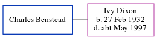

Charles Holland Benstead
[ Home ] | [ Calendar ] | [ Surnames Index ] | [ Census Index ] | [ Family History ]Charles Benstead and married Ivy Dixon at Thanet Registry Office, Thanet, Kent, England in Dec 19531.
Citations
- England & Wales Marriages 1837-2005 - Findmypast
Media
England & Wales marriages 1837-2005 - BMD/M/1953/4/AZ/000085/028
Family Tree
Generated by ged2site. Last updated on Jun 11, 2024